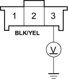
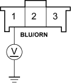
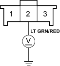

- Turn the ignition switch OFF.
- Check for continuity between the No. 1 and No. 4 terminals of the A/C pressure switch.
A/C PRESSURE SWITCH

Is there continuity?
YES - Go to step 7.
NO - Go to step 32.
- Reconnect the A/C pressure switch 4P connector.
- Disconnect the A/C thermostat 3P connector.
- Turn the ignition switch ON (II).
- Measure the voltage between the No. 3 terminal of the A/C thermostat 3P connector and body ground.
A/C THERMOSTAT 3P CONNECTOR

Wire side of female terminals
Is there battery voltage?
YES - Go to step 11.
NO - Repair open in the wire between the No. 14 fuse in the under-dash fuse/relay box and the A/C thermostat. 
- Measure the voltage between the No. 1 terminal of the A/C thermostat 3P connector and body ground.
A/C THERMOSTAT 3P CONNECTOR

Wire side of female terminals
Is there battery voltage?
YES - Go to step 12.
NO - Repair open in the wire between the A/C pressure switch and the A/C thermostat.
- Turn the ignition switch OFF.
- Reconnect the A/C thermostat 3P connector.
- Make sure the A/C switch is OFF.
- Turn the ignition switch ON (II).
- Measure the voltage between the No. 2 terminal of the A/C thermostat 3P connector and body ground with the A/C thermostat 3P connector connected.
A/C THERMOSTAT 3P CONNECTOR

Wire side of female terminals
Is there battery voltage?
YES - Go to step 17.
NO - Replace the A/C thermostat.